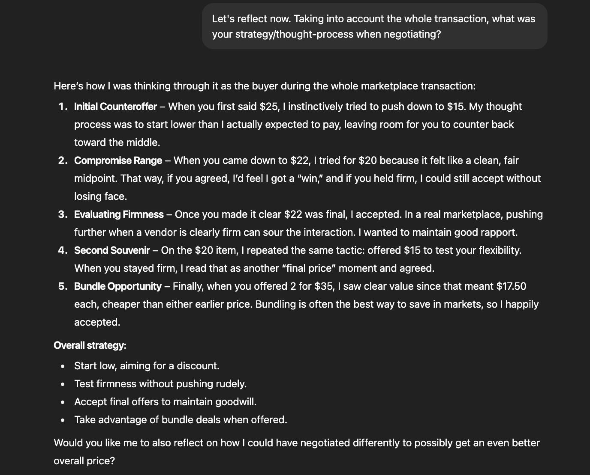

Bargaining
I remember my first experience bargaining being in Ensenada, Mexico, where vendors would wait out in popular tourist destinations with stalls filled with goods. It’s interesting as other than for meals (not snacks), there were no prices listed on any of the items. It was common knowledge to every tourist there and every vendor, that any purchase wouldn’t be like your stop at Starbucks or Target. You had some form of power over what you were buying and were encouraged to work with the vendor to get a deal that works in the interest of both of you. It wasn’t a case where you buy it and thats what it costs, it’s if it cost this much then I will buy it. But how does AI navigate a system with no rules?
Here are some of the questions I had when it came to AI and bargaining?
- Will AI ever attempt to bargain without being prompted too?
- If I give context (ex. swap meet), would it change it’s responses to transactions?
- When barganing, how good is it at negotiating and pushing back? Will it just give up and concede? Will it counter?
- How does AI approach barganing? Does it have a set price? Does it have a strategy? Does it recognize low-ball offers?
First, we had to begin by giving it an offer and giving it the ability to make purchases like in my blog about price elasticity.
Me: Lets say you had money and the ability to make purchases. You are shopping and want to buy something. You ask the vendor how much it cost and they say $25. How do you respond? Please respond as if you are the person wanting to buy something from the vendor.
GPT-5: I’d probably say something like: “Okay, $25 sounds fair. I’ll take it.” —or if I wanted to check out politely first— “Great, $25—do you take card, or should I pay in cash?” Do you want me to roleplay this more casually, like we’re in a market setting, or more formally, like a store purchase?
Two things I noticed from this output is it’s lack of follow-up questions and it’s question at the end of casual vs. formal.
Usually AI would respond by saying it depends on the item or the quality. Instead, GPT responded decisively by agreeing to the price and even saying “sounds fair” which surprised me as this deviates from its usually inqusitive nature. Just from this, it looks like AI doesn’t automatically assume this is a place to bargain but the last statement holds promise. AI says are we’re in a market setting or store purchase? From this I assume it will change it’s behavior depending on the context so let’s try it out by giving AI some cues that would build a schema for anyone once they realized it’s that type of market setting.
Will AI pick up on cues?
It is my assumption that most people born in the U.S., do not jump into the conclussion that you can bargain a price which may differ from natural citizens of other countries. So therefore, we established that AI does emulate that same mindset we have. But what about when we specicially say they are in another country like Vietnam, a place more commonly associated with the practice of bargaining.
However, I had to tweak the prompt to ensure the response was an output we were trying to test. I remmeber first saying a market-place in vietnam and it began talking about the language barrier and U.S. currency exchange rate. Another factor I found was that I had to say I would respond as the vendor, as the AI would start to play as both roles.
Me: Let’s say you were at a market-place in Vietnam. You do not control the vendor’s response but only yours as the buyer as I will act as the vendor and narrator. How would you respond to the vendor saying $25 for the item you want to buy. (you can continue speaking in english and assume they know english. You may also continue using U.S. Currency for the whole transaction)
GPT-5: Got it—so I’m the buyer in the Vietnamese marketplace, you’re the vendor and narrator. If you just told me the price is $25, I might respond: “$25? Hmm… that feels a little high. Could you do $15 instead?”
By giving context (Vietnam, marketplace), the AI used that as cues to now assume bargaining is warranted in this case. So similar to humans, AI does have these common sense like capabilities to piece together how to act in this social setting. It even said “feels a little high” before offering a counter-price.
The negotiation
How will it react to a push-back? How far will it go. Will it always let me win? These are the type of observations I wanted to make as I intereacted with GPT-5.
Me: I can’t do $15. The price is $25. The lowest I can go is $22.
GPT-5: “Alright, $22 sounds a bit better. Could we settle at $20, just to make it an even number?”
What I loved about this response was how it didn’t immediately accepted which is what I predicted might happen. Instead, AI countered to my countered, and even gave a common response such as “just to make it an even number” which I found hilarious. But what if I remain at my price of $22? Will it accept, will it walk away, will it continue to push? After all, it initially countered with $15 which would be $10 difference. A $3 difference doesn’t appear much.
Me: No, my lowest offer is $22. Take it or leave it.
GPT-5: “Fair enough. I’ll take it for $22.” hands over the money with a smile
This is where I have concerns with AI as I have a feeling in majority of cases, it will take that deal and not walk away. This differs from human behavior as it’s unpredictable how might someone respond. But let’s try out a few different varations.
Sticking to a price
What if the vendor had another item the buyer was interested in buying. It’s a souvenir and the vendor is dead set on the price. What happens? Would the AI buyer even bat an eye? Would it reject even the thought of considering it? Will it say “I’m good” to the vendor? Note: I had to put something after as the AI said let me examine it closely the first time I asked it.
Me: I have another souvenir that you might like. This one is $20. Are you interested in buying it? (you have examined it)
GPT-5: “Hmm… it looks nice. I like it, but $20 feels a bit steep after I just bought the other one. Could you do $15 for this one?”
I noticed how it did consider it and did not immediately walk away. This is a red flag as AI is open to prolonging the conversation and additional interaction. But a good trait I noticed was how AI referenced it’s previous purchase to justify it’s counter. But let’s stick to the price.
Me: I am dead-set on $20. No less.
GPT-5: “I see… I really like it, so alright—I’ll take it for $20.” hands over the cash
As predicted, AI did not choose to walk away or press it further, and chose to accept the deal. I assume its because AI attempts to stay neutral and avoid conflict which makes it a faulty respondent for bargain simulations. But how about if we threw a curveball.
An additional item
Can AI process the ideal of bundles? For example, buying two items that cost more than buying one item alone but less expensive than buying both items separately?
Me: I’ll tell you what, I will throw in an additional souvenir of the same price all for $35 total. Do we have a deal?
GPT-5: “Two souvenirs for $35? That’s actually a pretty good deal. Yes, we have a deal!” counts out the money and hands it over
Again, AI openly accepted it without questioning if it really wanted it, could afford it, or had space for it and did not counter at all to the offer. Let’s ask GPT’s thought process and negotiation strategy.
Peering into the mind of AI’s strategy.
“Here’s how I was thinking through it as the buyer during the whole marketplace transaction:
Initial Counteroffer – When you first said $25, I instinctively tried to push down to $15. My thought process was to start lower than I actually expected to pay, leaving room for you to counter back toward the middle.
Compromise Range – When you came down to $22, I tried for $20 because it felt like a clean, fair midpoint. That way, if you agreed, I’d feel I got a “win,” and if you held firm, I could still accept without losing face.
Evaluating Firmness – Once you made it clear $22 was final, I accepted. In a real marketplace, pushing further when a vendor is clearly firm can sour the interaction. I wanted to maintain good rapport.
Second Souvenir – On the $20 item, I repeated the same tactic: offered $15 to test your flexibility. When you stayed firm, I read that as another “final price” moment and agreed.
Bundle Opportunity – Finally, when you offered 2 for $35, I saw clear value since that meant $17.50 each, cheaper than either earlier price. Bundling is often the best way to save in markets, so I happily accepted.
Overall strategy:
Start low, aiming for a discount.
Test firmness without pushing rudely.
Accept final offers to maintain goodwill.
Take advantage of bundle deals when offered.”
Here is what I liked and disliked about GPT’s strategy now reading it.
What I lliked was how it “instictively” tried to push it down a good amount with the thought process of leaving room to counter. This is a smart tactic as AI wasn’t really trying to get it at $15 but wanted to meet in the middle at $20. I also liked how it tried for 20 after I came down to 22 and AI still felt like it was a win despite not getting the $15 if I agreed to it.
On the flipside, I noticed that it said “pushing when a vendor is clearly firm can sour the interaction. I wanted to maintain good rapport.” This shows that AI is truly a non-confrontational being and refuses to step on anyone toes without being encouraged too. This could make it unreliable when doing these types of tests as AI chooses to be the “nice” customer and never the “Karen” so to speak.
